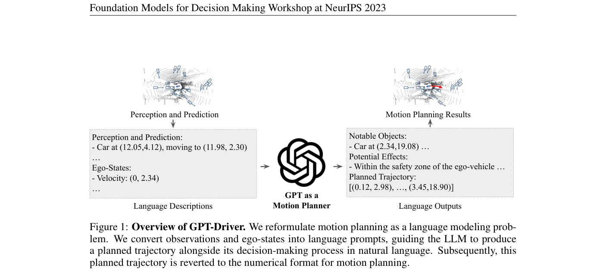
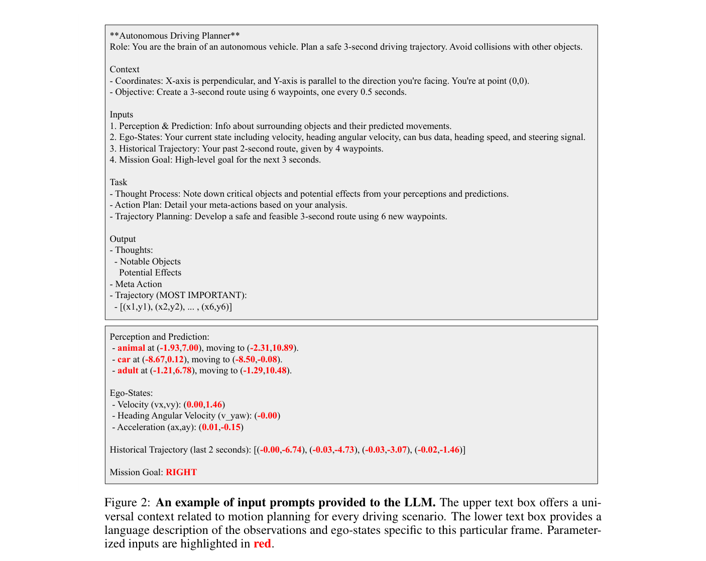
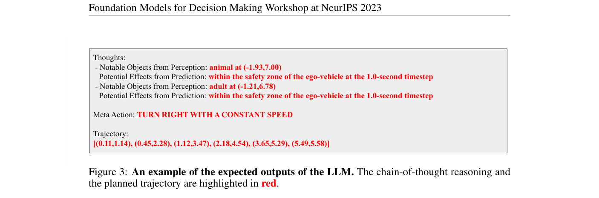

GPT-Driver: Learning to Drive with GPT
GPT-Driver 把自动驾驶 motion planning 重写为语言建模问题，将感知/预测/ego state 组织成 prompt，让 GPT-3.5 输出 CoT 决策过程和数值 waypoint 轨迹。
GPT-3.5、motion planning as language modeling、chain-of-thought、waypoint text、prompting-reasoning-finetuning、nuScenes、few-shot planning
LLM motion planner / text trajectory
是，评测代码公开；运行需要 OpenAI API
中高：适合作为“轨迹语言化”早期基线
计划公网链接：https://ixgnozeix.github.io/paper-reports/report/gpt-driver/
1. 论文速览
GPT-Driver 的贡献非常直接：把 planner 的输入输出都语言化。输入 prompt 包含通用驾驶上下文、检测/预测对象、ego state；输出包含自然语言推理和未来 waypoint 坐标，再解析回数值轨迹。论文提出 prompting-reasoning-finetuning 三步，让 GPT 不只写解释，还能输出精确坐标。few-shot 实验中，GPT-Driver fine-tuning 在 Table 2 达到 Avg. L2=0.84m、Avg. Collision=0.44%，明显优于 in-context learning 的 3.17m/5.30%。
2. 研究问题与动机
学习型 planner 常在训练分布外场景退化，且黑盒轨迹缺少解释。LLM 具备语言推理和少样本泛化，能否通过文本界面承担运动规划？GPT-Driver 的假设是：只要把结构化感知和轨迹坐标以合适 token 表示，GPT 的自回归建模能力可以学习驾驶轨迹分布，并通过 CoT 暴露关键对象和决策依据。
4. 方法详解
流程分三步。Prompting：把 perception/prediction 结果、ego velocity、历史轨迹等写成自然语言和坐标列表。Reasoning：要求模型先列出 notable objects、potential effects 和 high-level action，再给出 planned trajectory。Fine-tuning：用 nuScenes 人类驾驶轨迹和自动生成/标注的 reasoning guidance 调 GPT-3.5 fine-tuning API，使输出格式稳定。推理后用 parser 提取坐标，计算 L2 和 collision。
5. 实验与结果
实验在 nuScenes open-loop planning。few-shot 设置显示 fine-tuning 比 in-context learning 稳定得多：Table 2 中 fine-tuning Avg. L2=0.84、Avg. Collision=0.44；in-context Avg. L2=3.17、Collision=5.30。论文还展示生成的 CoT 能识别关键对象并解释减速/避让。证据缺口在于输入来自外部感知预测，模型没有直接学习图像；同时 GPT API 版本和随机性会影响复现。
6. 复现要点
复现需要 nuScenes、预缓存 perception/prediction/ego state、OpenAI API、fine-tuning 数据生成脚本和评测脚本。最小路径是先跑官方 evaluation code，复现 open-loop L2/collision；再用 10% 训练数据跑 fine-tuning。阻塞点是 API 成本、模型版本漂移、输出坐标解析失败和 prompt 格式不稳定。验收标准是 fine-tuning 明显优于 in-context learning，并能输出可解析 trajectory。
7. 分析、局限与边界
GPT-Driver 价值在于证明“轨迹坐标可作为语言 token 被 LLM 学习”，为 EMMA/OpenDriveVLA 的文本化轨迹输出铺路。它的边界也明显：没有视觉端到端，没有闭环反馈，安全依赖外部模块和 parser。改进可从开源 LLM、本地微调、轨迹 token 离散化和 safety verifier 入手。
8. 组会问答准备
A：因为坐标输出格式和数值精度需要稳定学习，仅靠 few-shot prompt 难以保证可解析和可驾驶。
A：CoT 提升解释和可能的推理一致性，但不能自动保证轨迹安全，仍需 collision 检查。
A：依赖外部 perception/prediction 模块输出对象、位置和未来轨迹文本。
A：GPT-Driver 是单次 prompt-to-trajectory planner；Agent-Driver 是多轮工具调用+记忆+反思的 agent 系统。
A：OpenAI API 模型版本变化和输出解析不稳定。
9. 补充图解与附录证据



我的阅读笔记
作为“LLM 轨迹语言化”基线非常适合引用。做新工作时可以把 GPT-Driver 的 prompt/CoT 设计替换为开源 VLA action tokens，并加入闭环/世界模型验证。